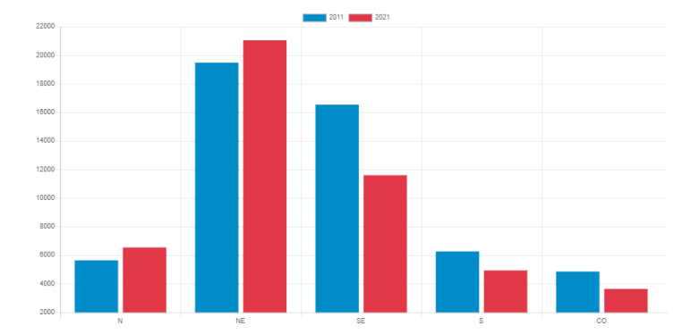
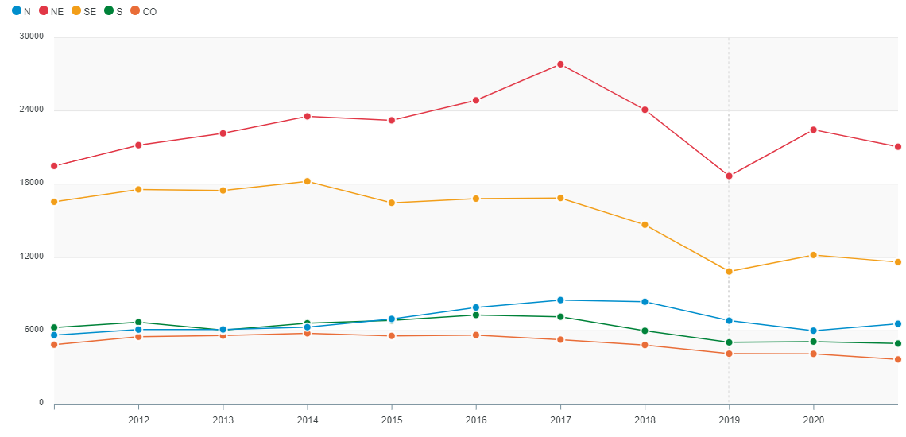

Número total de homicídios em cada região em 2011 e 2021.

A colunas azuis descrevem o ano de 2011, já as vermelhas descrevem o ano de 2021.
A ordem está em: Norte, Nordeste, Sudeste, Sul e Centro-Oeste.
Possíveis Explicações
Desigualdade Socioeconômica: Regiões com maiores índices de pobreza e desigualdade tendem a ter taxas de homicídio mais altas, devido à falta de acesso a oportunidades econômicas, educação e serviços básicos.
Presença do Crime Organizado: Algumas regiões são mais afetadas pela presença e influência de organizações criminosas, como tráfico de drogas e milícias, o que leva a uma maior incidência de homicídios relacionados ao crime organizado.
Efetividade das Políticas de Segurança Pública: A eficácia das políticas de segurança pública varia de uma região para outra. Algumas áreas podem ter uma presença policial mais eficaz e programas de prevenção ao crime mais robustos, enquanto outras enfrentam desafios de corrupção, falta de recursos e capacidade limitada de aplicação da lei.
Cultura de Violência e Impunidade: Em algumas regiões, uma cultura de violência enraizada e uma sensação de impunidade podem contribuir para altas taxas de homicídio, onde crimes muitas vezes não são investigados ou punidos adequadamente.
Número total de homicídios em cada região em 2011 e 2021.

Linha azul: Norte
Linha vermelha: Nordeste
Linha amarela: Sudeste
Linha verde: Sul
Linha laranja: Centro-Oeste
Possíveis Explicações
Desigualdade Socioeconômica: Regiões com maiores índices de pobreza e desigualdade tendem a ter taxas de homicídio mais altas, devido à falta de acesso a oportunidades econômicas, educação e serviços básicos.
Presença do Crime Organizado: Algumas regiões são mais afetadas pela presença e influência de organizações criminosas, como tráfico de drogas e milícias, o que leva a uma maior incidência de homicídios relacionados ao crime organizado.
Efetividade das Políticas de Segurança Pública: A eficácia das políticas de segurança pública varia de uma região para outra. Algumas áreas podem ter uma presença policial mais eficaz e programas de prevenção ao crime mais robustos, enquanto outras enfrentam desafios de corrupção, falta de recursos e capacidade limitada de aplicação da lei.
Cultura de Violência e Impunidade: Em algumas regiões, uma cultura de violência enraizada e uma sensação de impunidade podem contribuir para altas taxas de homicídio, onde crimes muitas vezes não são investigados ou punidos adequadamente.